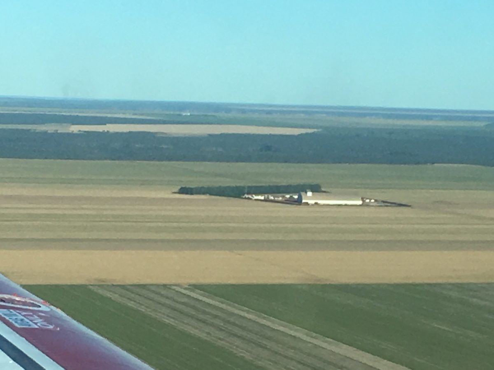
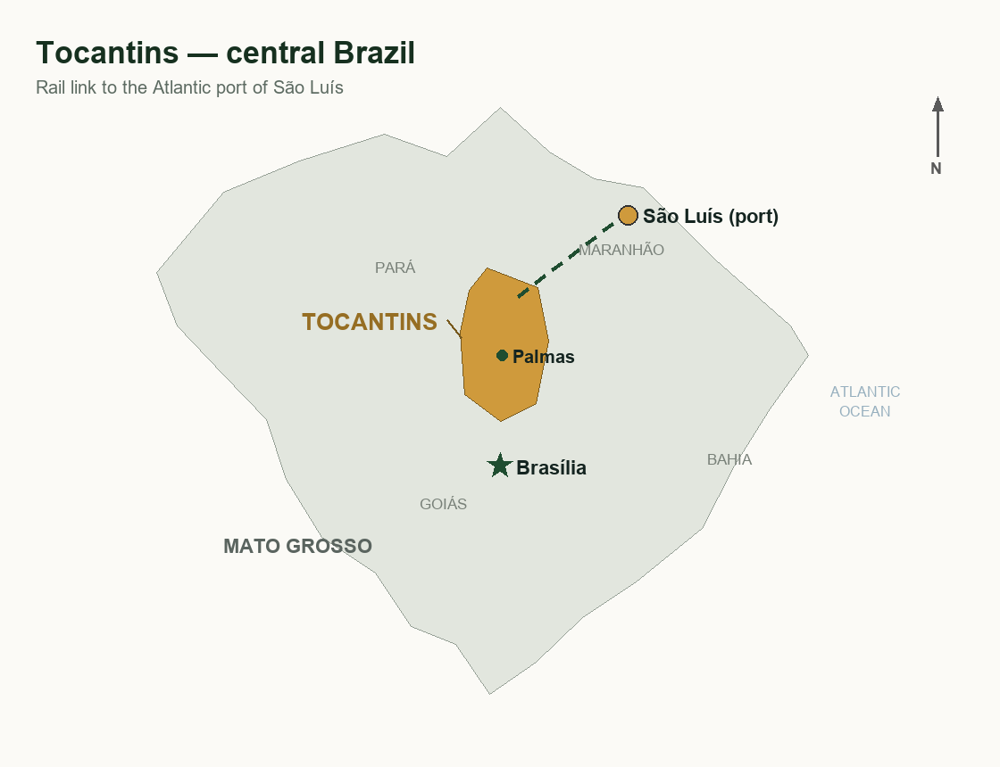
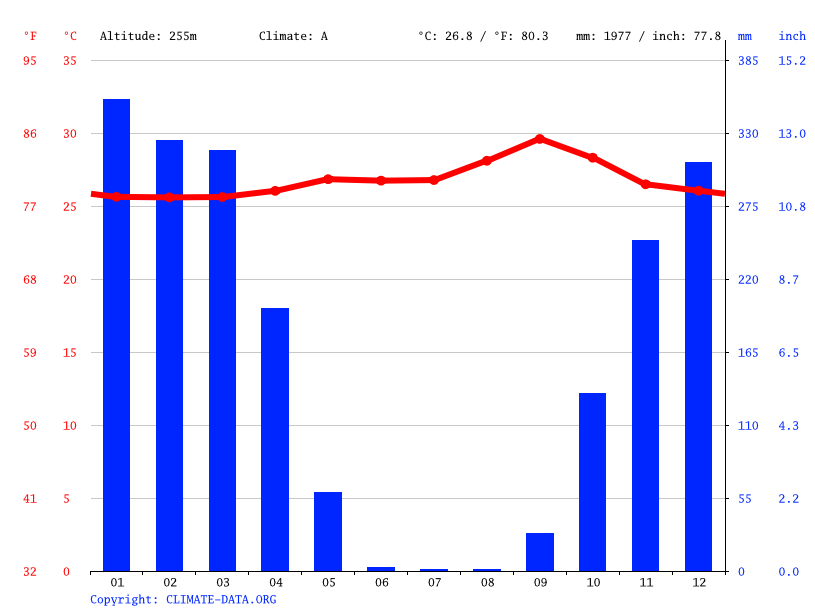
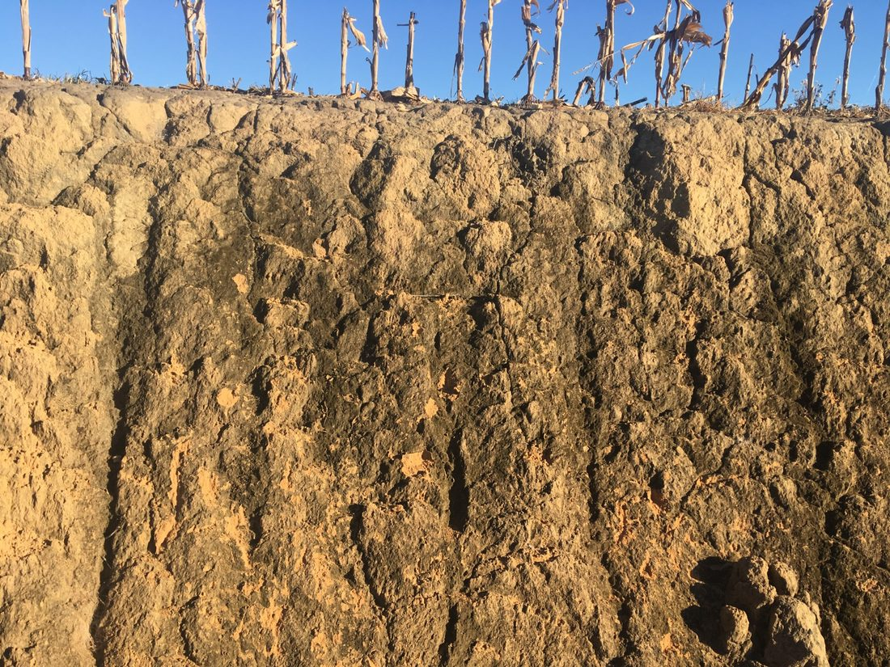
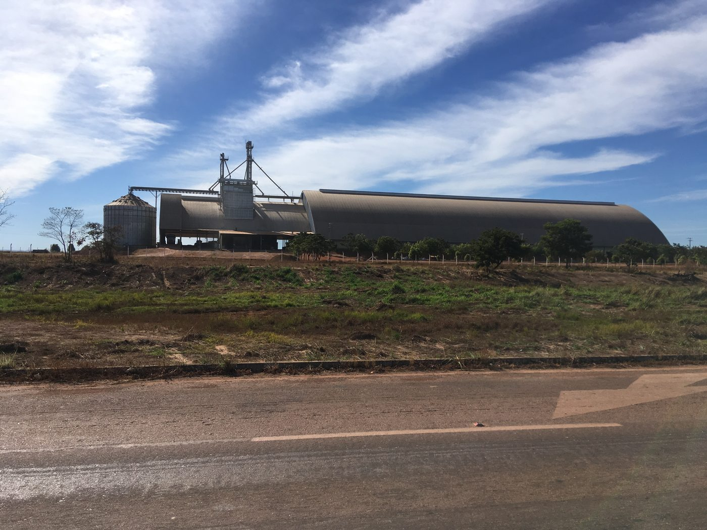

The region
Why Tocantins
The last hotspot still in development
In my view, the state of Tocantins offers the best opportunity to start a farming business in Brazil today. Climate and soil are very good — with good management, two harvests per year are possible — and, crucially, land prices are still moderate.
There is no comparison with prices in the South (such as São Paulo state) or the Center-West (such as Mato Grosso). Those are developed, established regions where the agricultural build-out has already happened and little land is left to open up. Tocantins is one of the last agricultural hotspots still in development. That means some pioneer work may remain — clearing land, building infrastructure — but experienced contractors are available for all of it.
Other developing regions don't offer the same conditions: Roraíma in the north has poor soils (and only 20% of the land may be used), Piauí has only a small stretch of good land at higher prices, Maranhão is too hilly, Bahia is too expensive.


Climate and soil
The climate is warm, with a rainy season from November to April and annual precipitation of approximately 1,800 mm.

The soils have a clay content of roughly 15–25%, in places 30–35%, with the remainder sand — very good for soybeans. The natural vegetation is wet savannah of varying density; the topography is gently undulating.

Infrastructure
Tocantins has excellent transport links, including a railway to the port of São Luiz in neighbouring Maranhão. Limestone deposits are nearby. The full commercial infrastructure of modern agriculture is in place: dealers for seeds, fertilizers, chemicals, and machinery, and buyers for farm products.

Value appreciation
A trip I made through the region in 2018, scouting farmland for a client, recorded these prices (exchange rate at the time: 4.5):
- Good land, barely cleared, 7,000 ha, 200 km from the capital Palmas: R$ 1,900/ha ≈ €420/ha
- 14,400 ha next to warehouse and tarmac road, partly open, flat, top condition: R$ 3,500/ha ≈ €780/ha
- 5,000 ha on the tarmac road, much already under cultivation, approx. 50 km out: R$ 7,000/ha ≈ €1,550/ha